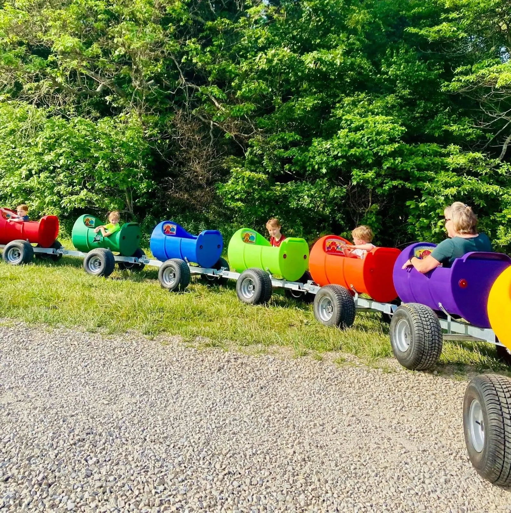
Birthday parties on the farm
- Barrel Cart Train Ride
- Ziplines
- Wildwood Playground
- Petting Area
- Apple Bounce Pad
- Pedal Karts
- 2 reserved picnic tables
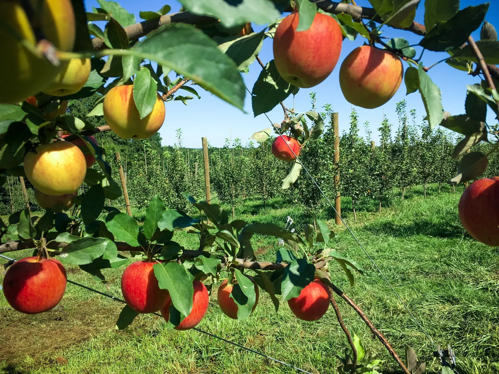
U-pick apples, as well as peaches, pears, blueberries, blackberries, pumpkins, vegetables, grass-fed beef and family fun in Burfordville, Missouri. Many other local and farm products are in our store.
Farm store: closed for the season. See you in 2027.
With over 29 varieties of U-pick apples, there’s always a new one coming ripe. Not in the mood to pick? Drop by the farm store for pre-picked apples, bagged and ready to go.
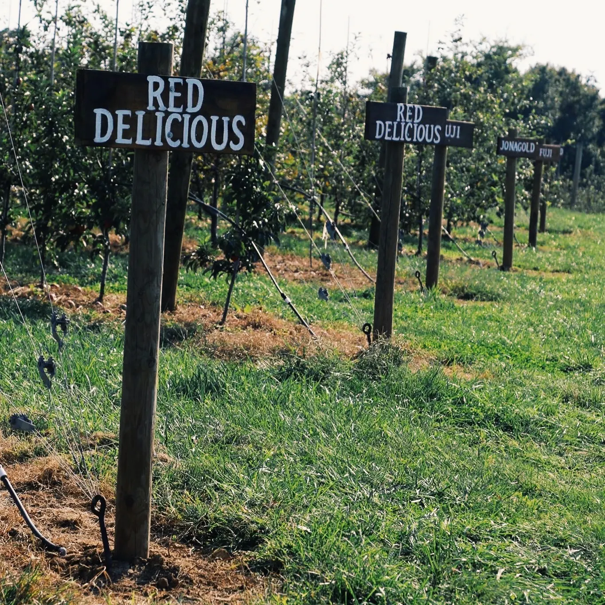
Every row has its sign
Sweet, crunchy, juicy.
Eating
Sweet, crisp.
Eating, cider, sauce
Sweet, crisp, juicy.
Eating, cooking
Sweet-tart and crisp, a cross between Jonathan and Golden Delicious.
All-purpose
Sweet with a hint of tartness, firm, crisp, long-lasting, white flesh.
Eating, cooking, baking
Firm, crisp, juicy, sweet-tart.
Cider, sauce, preserves, baking
Sweet and sharp, aromatic, juicy, large.
Eating, baking
Firm, crisp, sweet-tart.
Eating, baking
Firm, juicy, crisp, tart.
Baking, smoothies, sauce
Crunchy and sour, mellowing to a sweet-tart, tangy flavor when stored.
Baking, cider, butter
Ripening dates are approximate, so please call ahead or check our Facebook page to see what’s currently available.
Every variety, in detail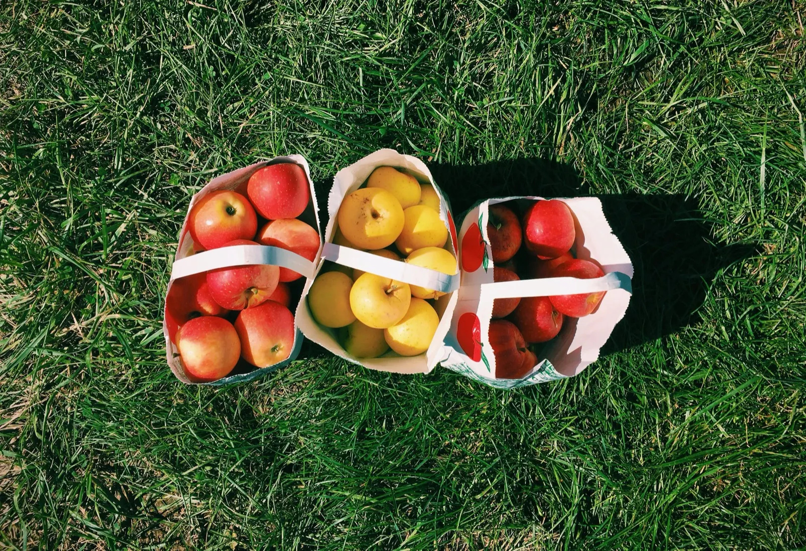
“Surely the apple is the noblest of fruits.”
Henry David Thoreau
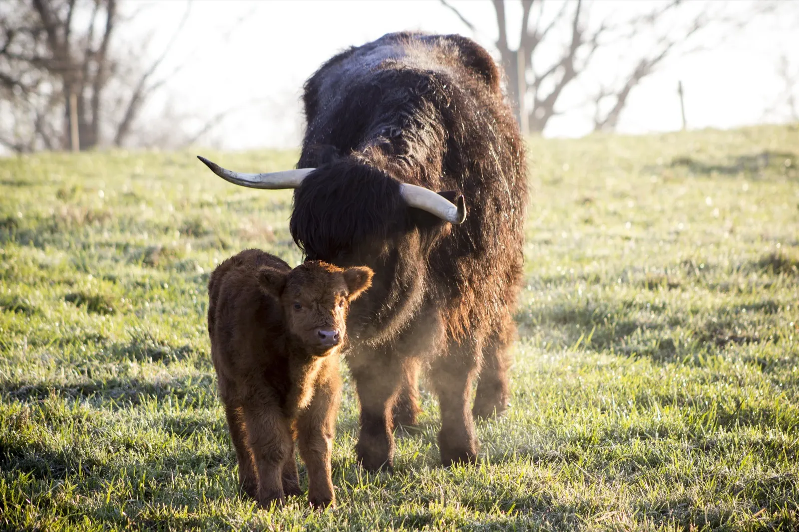
On the pastureShop in our farm store, or order online and schedule your pickup. Subject to availability: follow us on Facebook or contact us for updates.
Various cuts and packs of our grass-fed beef, in the store or online.
USDA inspected. A mix of steaks (rib, sirloin, T-bone, flank, skirt), roasts (chuck, arm, rump, sirloin tip), ground beef and, in some quarters, a brisket. Reserve online or contact us for details.
Our flock is raised on pasture and hay, with occasional supplemental feed. The ewes are Katahdin hair sheep, crossed with a Dorper ram. Lamb sheet (PDF)
In addition to the fruit trees and the vegetable garden, Knowlan Family Farm is home to a herd of Red Angus cattle, sheep, goats and countless wildlife. We opened our doors in 2016, and the years to come will bring more activities for kids and families as we grow.
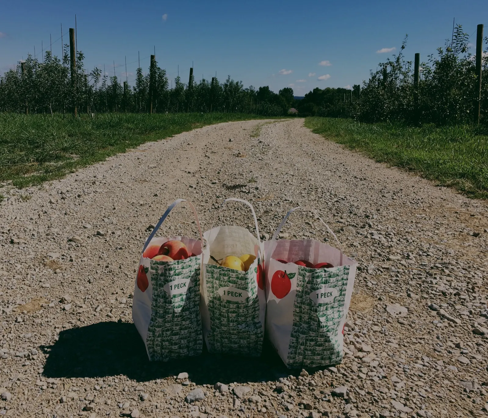
Between the orchard rows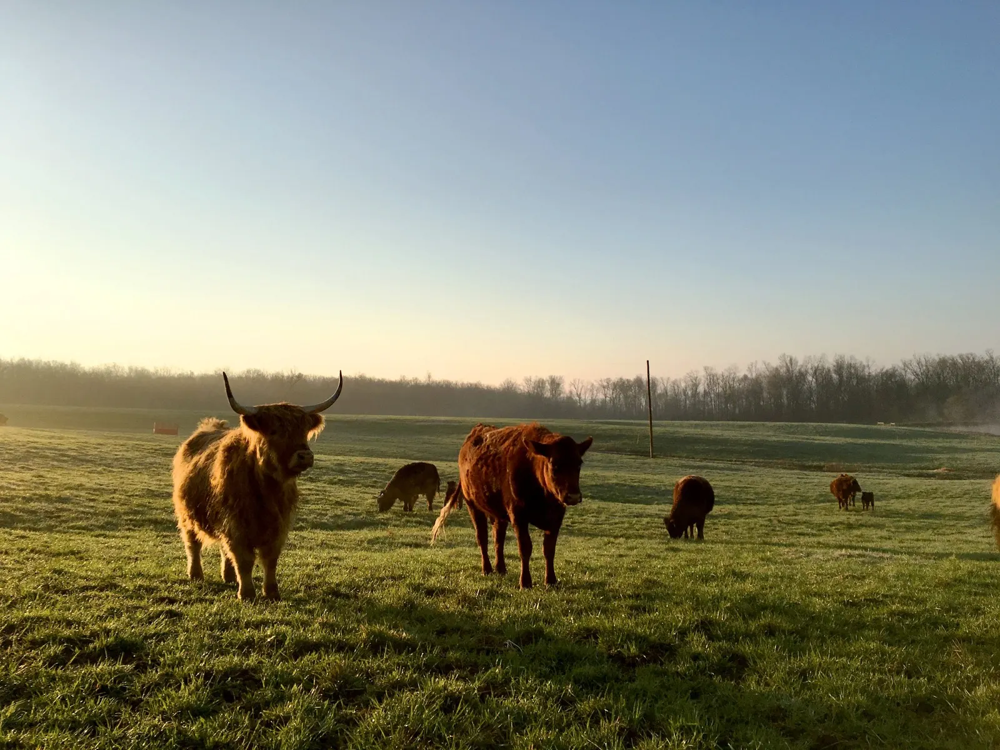
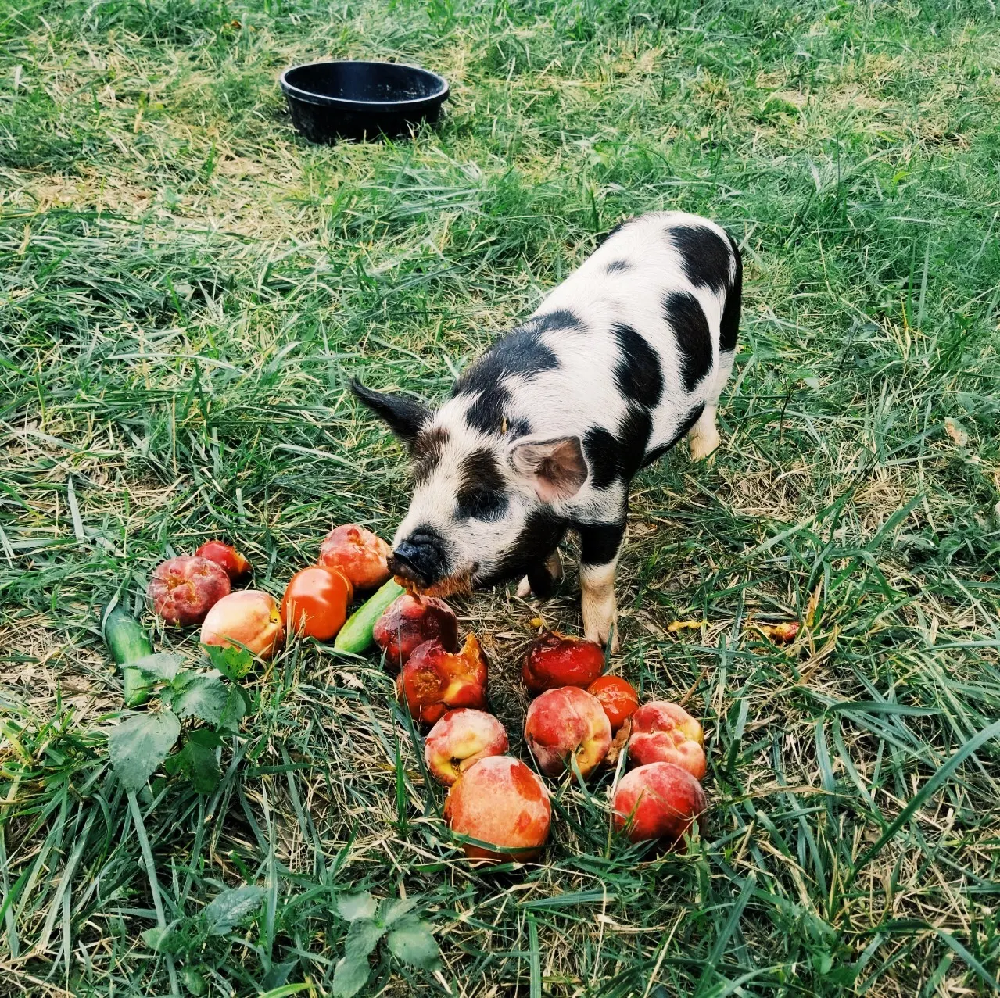
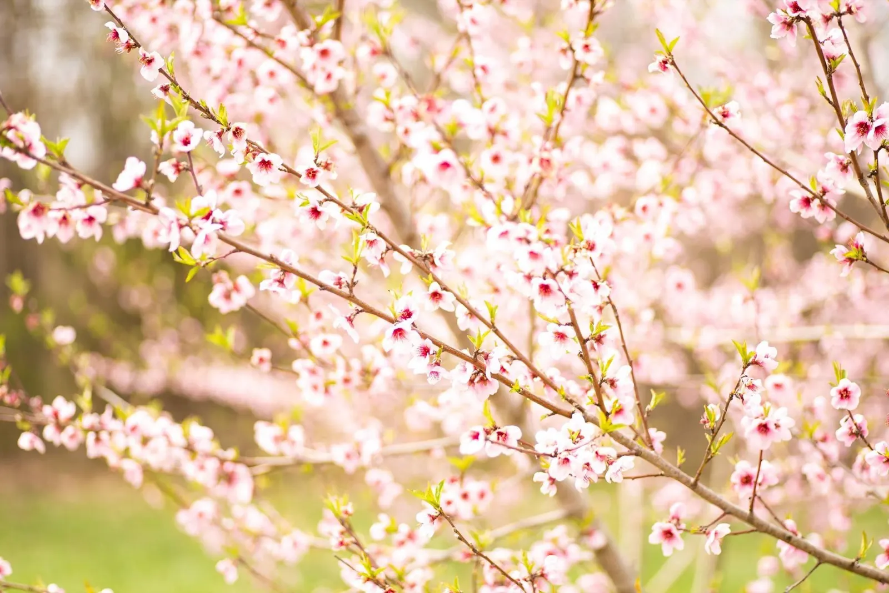

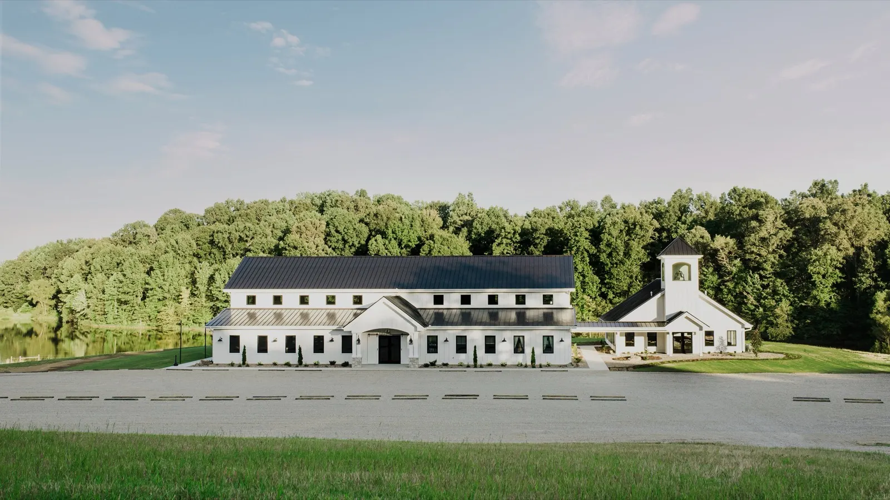
Weddings and events are hosted at the Knollcrest venue, with its own line for inquiries.
We accept all credit and debit cards, personal checks and cash.
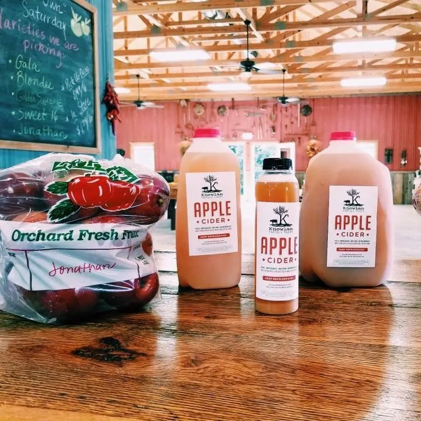
The farm store is closed for the season.See you in 2027.
| Monday to Saturday | 9 am–5 pm |
| Sunday | Closed |